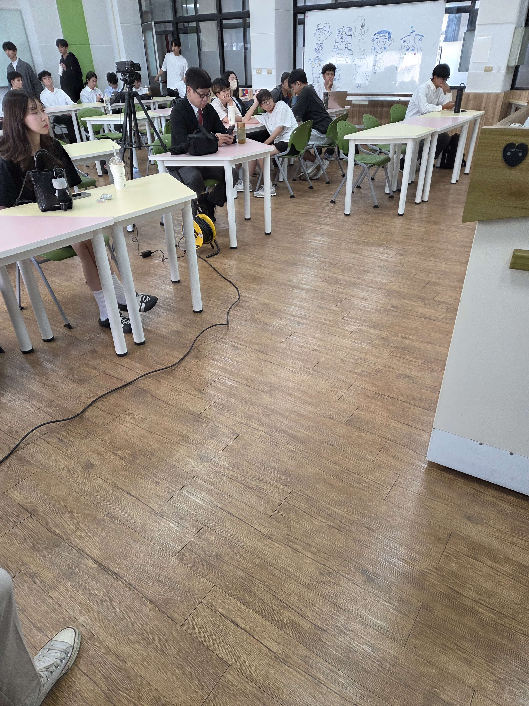

我覺得資訊管理是很重要的一個領域，再強大的工具都需要管理者進行管理，為用戶提供服務，為公司賺取收入，這些都需要管理才能運行
因此，我認為資管是非常重要的!
不過我有接觸過資工的課程，感覺這兩個如果可以合作開發，感覺會更強，但還是少不了資管系就是了!
自我介紹
- 姓名： 林均昊
- 學校： 聯合大學
- 主修專業： 資訊管理學系
- 興趣： 做沒壓力的事情
- 目標：全端網頁設計師
我是林均昊，我就讀聯合大學資訊管理學系，平時喜歡做沒有壓力的事情，
高中的我是資訊科的(電機電子群資電類)，但我實在不喜歡電路板，而且電子學好難，
而我覺得資訊管理是我喜歡的科目，所以選擇了聯合大學的資訊管理學系!
雖然在校成績不是很爛，但是我覺得我如果到大學讀資訊工程學系，
我可能會被超難懂的課業壓到喘不過氣，所以我還是選擇我喜歡的科系
雖然目前被當的科目有點多，但我覺得還可以，至少被當的都是魔王科目XD
希望可以成為網頁全端設計師
目標是架設全端網頁!
教育背景
-
聯合大學
學位：資訊管理學系 在學中
重要課程或專案：資料庫開發，網頁程式設計
經驗和實習
-
桃園市龍岡圖書館
角色/職稱：志工
貢獻與職責：負責書架整理，還書上架
所學技能：學會了如何上架分類書籍，管理手上需要處理的事情
過程：我在圖書館擔任志工，負責的是將讀者還的書上架， 要根據書的屬性編號來排放，樓層則是2樓是兒童圖書室為主，3樓是主要的樓層， 幾乎很多原文書，食譜，漫畫，雜七雜八的書都在3樓，所以我還滿希望那車都是2樓的書XD
但其實也還好，因為上書完後，差不多2小時就過了，就可以先休息了，等下午再上工，當然 ，有時讀者會跑來問我，某一本XXXXXX書在哪裡，我都心想我要怎麼背哪一本書在哪裡XD，圖書館很大耶， 我就會從電腦進行查詢，如果沒庫存就跟他說要到櫃檯詢問，如果有就過去幫讀者拿，雖然也有發生有庫存但 沒找到那本書的情況，不過還好，不多，不會太尷尬XD
我覺得當圖書館志工真的滿不錯的，至少環境不太需要跟人溝通 ，也不太會有什麼類似奧客的讀者，畢竟奧客個性的人不會出現在圖書館，所以圖書館真的很棒，在圖書館工作感覺也很不錯呢， 而且我們有學資料庫，也許我可以為圖書館設計資料庫跟前端?!不過有點難，畢竟是國家的等級， 似乎要提升我的能力到一定水平，才有機會可以為圖書館設計這些服務，不過在圖書館真的能學到很多呢!
專業技能
- 程式語言：C++，Java
- 資料庫管理： MySQL，MariaDB
- 網頁開發：HTML，CSS
專案作品
-
[我的前端網頁]
專案說明：就是這個網站!我覺得這是最能展現我的專案作品
技術細節：使用HTML、CSS架設的網站
文章與觀點
獲獎與榮譽
目前沒有獲得什麼獎項，我會努力加油的!!
參與活動照片
